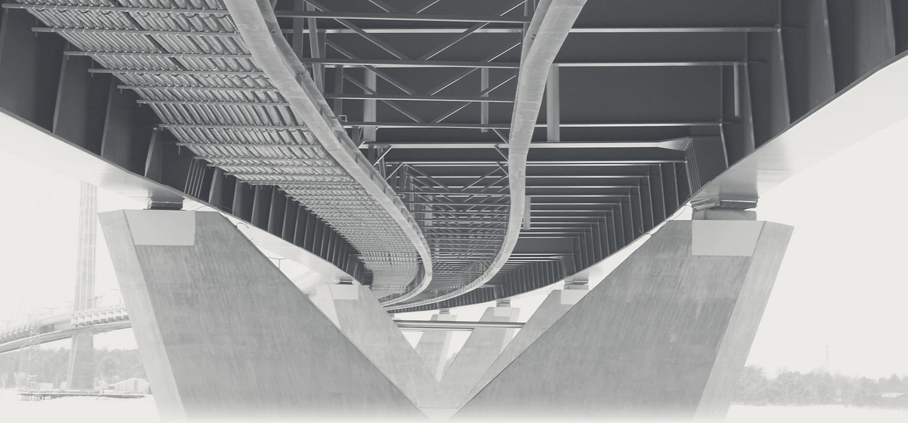
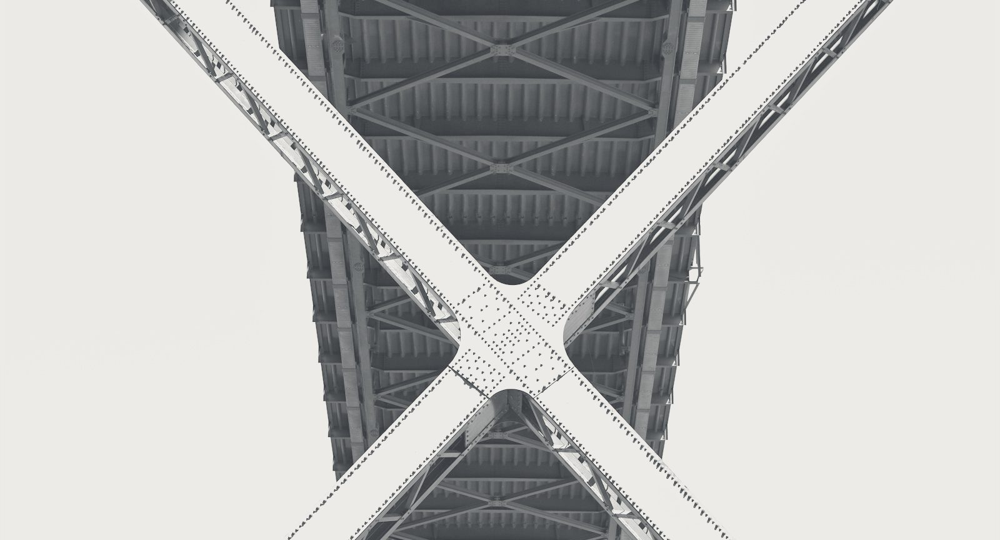
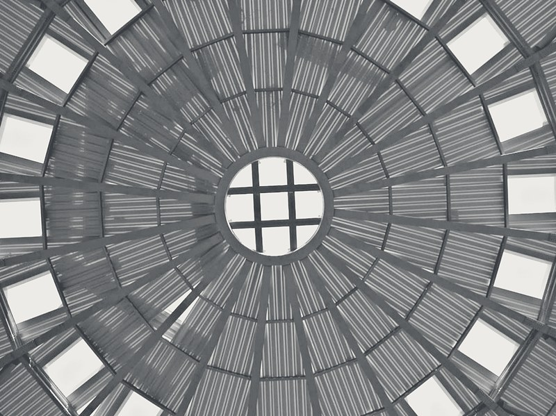

Ingegneria delle strutture
Calcoli statici, disegni costruttivi, direzione lavori e collaudi di ponti, coperture ed edifici in acciaio e cemento armato, per imprese e gruppi industriali. Da Vigonovo, tra Padova e Venezia.
- Edificio industriale, Emirati Arabi Uniti8000 t
- Grand Hotel Molino Stucky, Venezia250.000 m³
- Circuito e centro commerciale, Adria700 t
Registro
delle opere
14 opere, da Padova a Doha
- 2013Facciata del campus Birley FieldsManchester, Regno Unito
- 2012Ponte KomoKango, Gabon
- 2012Ponte di CampocroceAutostrada A4 (TV)
- 2012Ponte sull’IsonzoFarra d’Isonzo (GO)
- 2012Nuovo stadioNizza, Francia
- 2012Centro congressi KAFDRiyad, Arabia Saudita
- 2012Progetto di montaggio e sollevamentoSan Pietroburgo, Russia
- 2012Facciata degli uffici comunaliRochdale, Regno Unito
- 2011Edificio industrialeEmirati Arabi Uniti8000 t
- 2011Uffici Tesa 105Arsenale, Venezia80 t
- 2011Passerella sul Passante di MestreSambughè (TV)
- 2011Ponte della FieraPadova
- 2010Ponte VerdePadova
- 2010Ponte VersaMariano del Friuli (GO)
- 2010PasserellaParma
- 2009Ponte di PegognagaMantova
- 2009Point VillageDublino
- 2008Cavalcaferrovia SarpiPadova
- 2008Passerella sul Po di VolanoMigliarino (FE)
- 2008Grand Hotel Molino StuckyGiudecca, Venezia250.000 m³
- 2008AeroportoDoha, Qatar
- 2007Centro direzionale GiottoPadova
- 2006Circuito e centro commercialeAdria (RO)700 t
- 2005Ponte di AlbesAutostrada del Brennero
- 2005PasserellaTremonti di Sopra (PN)
- 2004Passerella dell’hotel FormentinAbano Terme (PD)
Altre opere
- Ponte sul BrentaCorte di Piove di Sacco (PD)
- Centro commerciale AlimarketPadova
- Chiesa di San FrancescoPadova
- Ex zuccherificioCavarzere
- CampanileMontecchia di Crosara
- Centrale elettricaCastegnero
- Centrale elettricaMaleo
- Centrale elettricaMeduno

Dal calcolo al collaudo, con un solo interlocutore
Progetto
Preliminare, definitivo ed esecutivo. Calcoli statici di strutture in acciaio e in cemento armato, ingegneria antincendio e acustica.
Disegno costruttivo
Disegni costruttivi delle carpenterie metalliche, dal modello in 3D alle tavole d’officina.
Cantiere
Direzione lavori, coordinamento della sicurezza e rilievi con strumenti nostri.
Gestione e collaudo
Consulenza tecnico-economica, controllo di tempi e costi, collaudi e perizie tecniche.
Ventiquattro postazioni a Vigonovo
- Calcolo
- SAP2000, CDM Dolmen, SuperSAP, Straus7
- Disegno
- Tecnometal, Bocad 3D, Prosteel 3D
- Rilievo
- Stazione totale Trimble 5503, livello digitale Zeiss DiNi 11
- Acustica
- Fonometro Larson Davis LD-831, classe 1

- Diametro
- 90m
- Acciaio
- 700t
Contatti
- Studio
- Tre Esse S.r.l.Ingegneria delle strutture
- Tavola
- Recapiti
- Scala
- 1:1
- Telefono
- 049 87 05 564
- Indirizzo
- Via San Marco 14
Zona artigianale di Tombelle
30030 Vigonovo (VE)
Apri la mappa - info@3essesrl.com
- Fax
- 049 87 05 572
- Posta certificata
- 3essesrl@legalmailbox.it